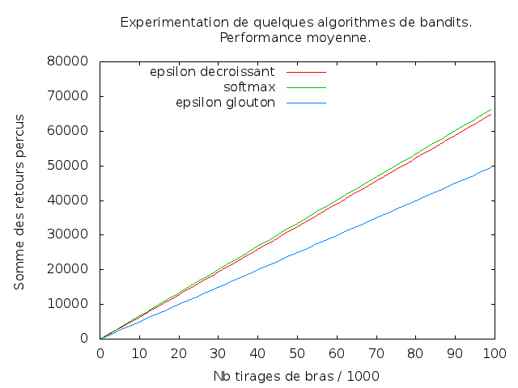

Ce premier TP va concerner le problèmes des bandits décrit en cours.
L'objectif du TP est d'implanter et tester expérimentalement
différentes stratégies pour résoudre des problèmes de bandits.
Pour l'instant, on cherche une stratégie qui maximise la somme des
retours perçus.
Pour simuler le tirage de bras on utilisera le code ci-dessous. On suppose que vous le placez dans un fichier dénommé bandits.c.
#include <stdio.h>
#include <stdlib.h>
#include <gsl/gsl_rng.h>
#include <gsl/gsl_randist.h>
#define K 10 /* nombre de bras */
#define N 1000
/* Ne modifiez pas ce qui suit, jusqu'au prochain commentaire
qui vous dit que vous pouvez le modifier...
*/
static double alphas [K], betas [K];
static gsl_rng *generateur_r; /* global generator */
static const gsl_rng_type *generateur_T;
void init (void)
{
unsigned int i;
gsl_rng_env_setup();
generateur_T = gsl_rng_default;
generateur_r = gsl_rng_alloc (generateur_T);
for (i = 0; i < K; i ++) {
alphas [i] = gsl_ran_flat (generateur_r, 0.0, 1.0);
betas [i] = gsl_ran_flat (generateur_r, 0.0, 1.0);
}
}
/* Bras avec résultat binaire, succès ou échec. */
static double seuil_bras [K];
void init_bras_binaires (void)
{
unsigned int k;
for (k = 0; k < K; k ++) {
seuil_bras [k] = gsl_ran_flat (generateur_r, 0.0, 1.0);
}
}
double tire_bras_binaire (unsigned int k)
{
if (k >= K) return 0.0;
return (gsl_ran_flat (generateur_r, 0.0, 1.0) < seuil_bras [k] ? 1.0 : 0.0);
}
/* Ne modifiez pas le source avant ce commentaire.
Après, faites ce que vous voulez... */
/* La fonction main() ci-dessous est juste un exemple d'utilisation. */
main (void)
{
unsigned int k, j;
double somme_des_retours [K];
init ();
init_bras_binaires ();
for (k = 0; k < K; k ++) {
somme_des_retours [k] = 0;
for (j = 0; j < N; j ++)
somme_des_retours [k] += tire_bras (k);
printf ("Performance moyenne du bras %d : %g\n",
k, somme_des_retours [k] / N);
}
}
La fonction main() est ici donnée à titre d'exemple
d'utilisation de la fonction tire_bras().
Pour générer des nombres pseudo-aléatoires, on utilise une
bibliothèque de fonctions numériques très puissante, la Gnu
Scientific Library, la GSL. Cette bibliothèque contient de très
nombreuses fonctionnalités, dont la génération de nombres
pseudo-aléatoires. Cette bibliothèque est très performante, il y a peu
de bugs et elle est maintenue pour corriger ceux qui existent.
Son utilisation est généralement très simple. Ci-dessus, on a indiqué
les deux sources, à gauche celui que l'on a utilisé jusque maintenant,
à droite en utilisant la GSL.
Pour compiler ce source, on utilise une commande telle :
gcc -o ./bandits bandits.c `pkg-config --cflags --libs gsl`
(Si par malchance la commande pkg-config n'est pas installée
sur votre machine, vous pouvez remplacer `pkg-config --cflags
--libs gsl` par -lgsl -lgslcblas -lm.)
Quand on utilise ces fonctions de génération de nombres
pseudo-aléatoires, la séquence de nombres engendrée est la même à
chaque lancement du programme. Cela permet de simplifier la mise au
point. Cette séquence est initialisée au lancement du programme avec
un nombre (la graine, seed en anglais) ; il suffit
d'inialiser le générateur avec une graine différente à chaque
lancement pour avoir des séquences différentes. Pour cela, on appelle
la fonction gsl_rng_set (generateur_r, seed), seed
étant la graine, de type entier long. Le problème devient de donner
des graines différentes à chaque lancement...
Pour tracer les graphiques, je vous propose d'utiliser gnuplot. C'est une commande que vous tapez dans une fenêtre shell. Ensuite, vous tapez des commandes gnuplot comme je vous l'ai indiqué en cours.
Pour en savoir plus sur ce logiciel très puissant, vous pouvez consulter cet excellent site. Commencez par les Basic Use, puis la page Numerical Calculations.
Pour lundi 17 septembre, vous implantez plusieurs stratégies de choix
de bras on-line et vous comparez expérimentalement leurs performances.
L'objectif de l'algorithme est de maximiser la somme des retours
cumulés au fil des itérations. Quand on tire un bras (appel de la
fonction tire_bras(k)), on obtient un retour qui est un
nombre compris entre 0 et 1 qui, si vous voulez, correspond à une
somme d'argent. Au fil des itérations, en tirant un bras à chaque
itération, vous allez ainsi accumuler une certaine somme.
Chaque tirage de bras fourni un retour de manière non
déterministe : en tirant deux fois le même bras, le retour n'est
pas le même. Néanmoins,
chaque bras fourni des retours qui ont une certaine moyenne. Chaque
bras est associé à une certaine moyenne fixée ; il y a donc des bras
qui rapportent plus les uns que les autres ; le but est de
maximiser la somme que vous accumulez au fil de N itérations.
Algorithmes que vous devez implanter :
if (epsilon < drand48 ())
/* sélection du meilleur bras jusque maintenant */
else
/* sélection d'un bras au hasard */
Remarques/conseils pour les algorithmes on-line :
En guise d'exemple de ce que l'on obtient, un graphique comparant les performances moyennes des 3 algorithmes on-line sus-mentionnés. Chaque algorithme est exécuté 30 fois durant 100000 itérations. On a représenté la moyenne des sommes cumulés à chaque itération.
Les algorithmes étant non déterministes et les retours des bras aléatoires également, on doit exécuter chaque algorithme plusieurs fois et moyenner ses performances. Votre programme aura donc une structure comme celle-ci :
/* initialisations */
for (execution = 0; execution < Nombre-d-execution; execution ++) {
for (t = 0; t < T; t ++) {
k = selection_d_un_bras ();
r = tire_bras (k);
...
}
}
Il faut donc pour chaque exécution de chaque algorithme, à chaque
itération, stocker la somme des retours obtenus pour l'ensemble des
bras (pas la peine de conserver cette somme pour chaque bras puisque
ce qui nous intéresse est la performance globale de l'algorithme).